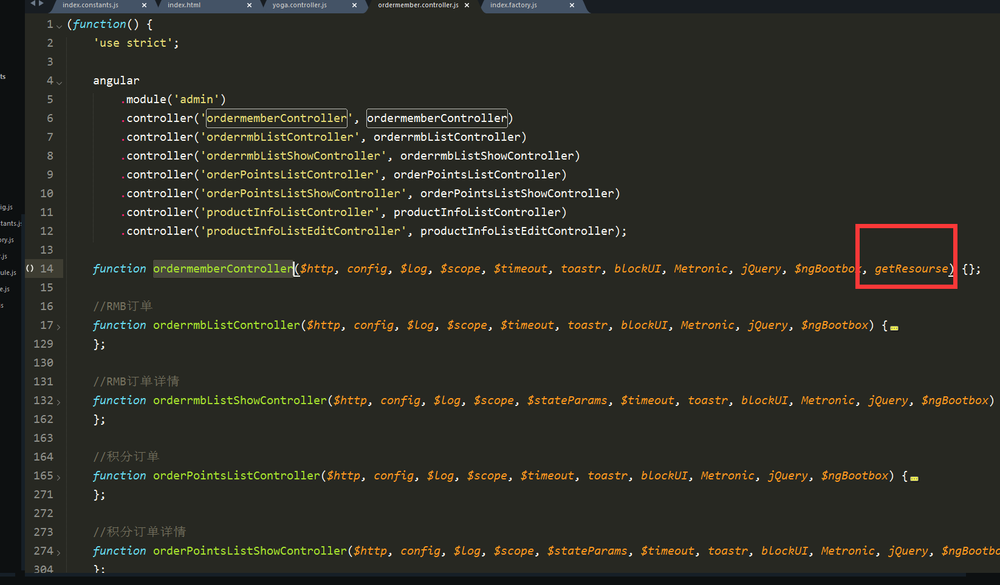

AngularJS的小项目
张磊 / 2017-07-12
为啥选择它 & 缺点？
领导钟情于它
后端只给接口 接口json数据结构前端定义
其中有类似php代码编写 后端也可以编写代码
历史原因
缺点
前端后端同时编写代码 代码不统一 后期难以维护
上线之后难以跟踪问题
代码结构 两种方式采用一种（一个控制器 对应一个单页面）
目的：让代码结构清晰 编写高效 便于后期维护

处理的一些问题 & 遇到的一些问题
文件上传
百度UEditor在angular中
表单元素操作
THE END